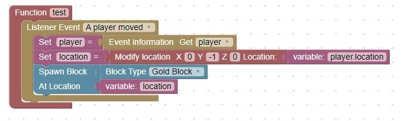
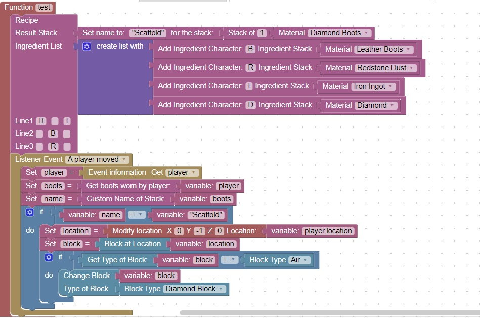

<h1>Scaffold</h1>

A scaffold allows a player to walk "on air", because as they move a solid block is placed under their feet.<br>

<br>

Here is same idea, adding a pair boots to trigger the effect<br>
<br>]

